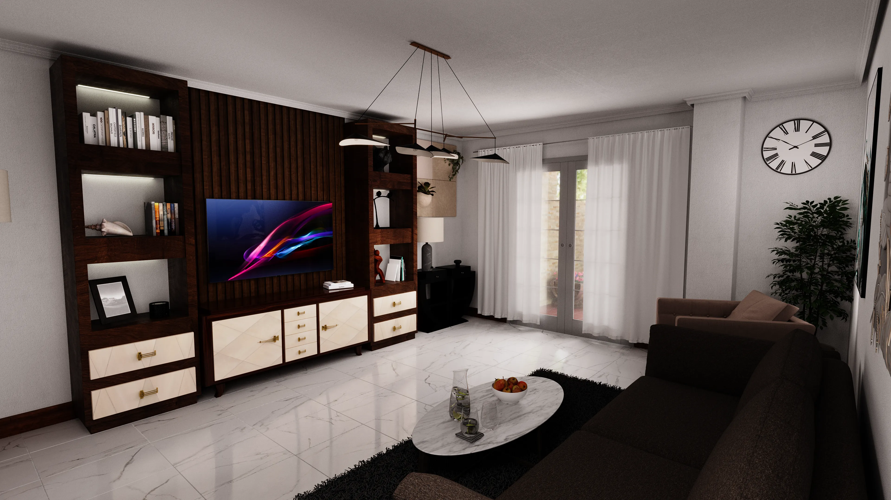
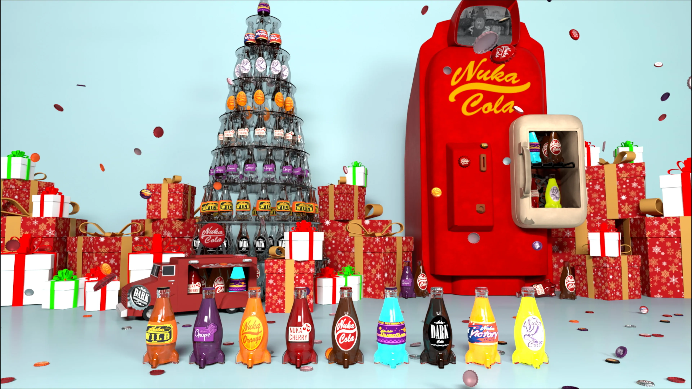
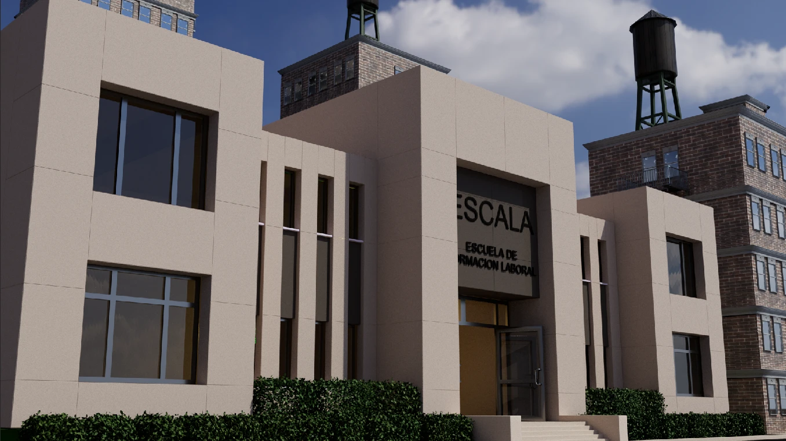
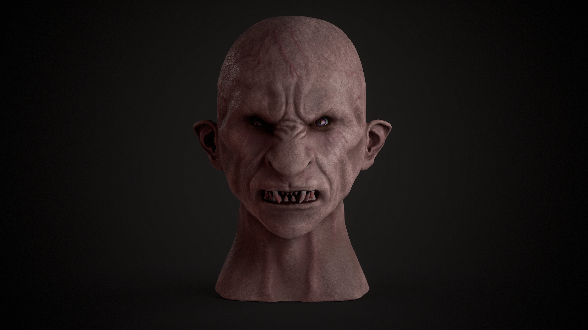
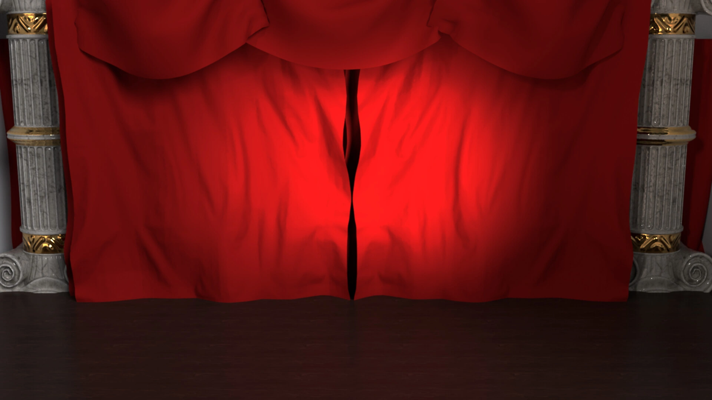

Galería
Proyectos
Visualización 3D, arte digital y videojuegos.

3D / Arquitectura
Exposición de Vivienda
Visualización arquitectónica · 3ds Max · Corona Renderer

Arte Digital / Fan Art
Nuka-Cola: Holiday Spirit Never Ends
3ds Max · Arnold Renderer · TyFlow · ZBrush · After Effects

3D / Motion
Anuncio Educativo ESCALA
3ds Max · tyFlow · Substance 3D Painter · After Effects

Arte Digital / Fan Art
Dettlaff — Fan Art
ZBrush · Substance 3D Painter · The Witcher 3 · Blood and Wine

3D / Motion
Anuncio Conceptual Canon
3ds Max · tyFlow · Cloth Simulation